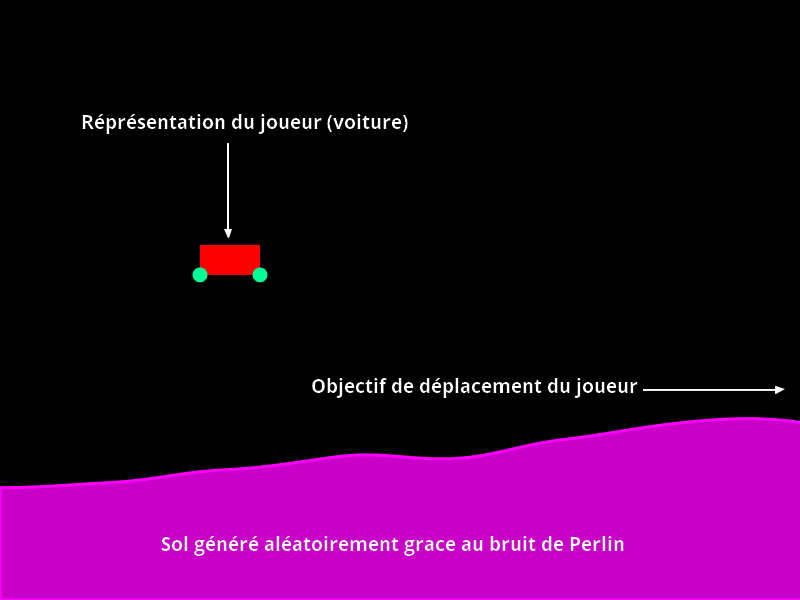
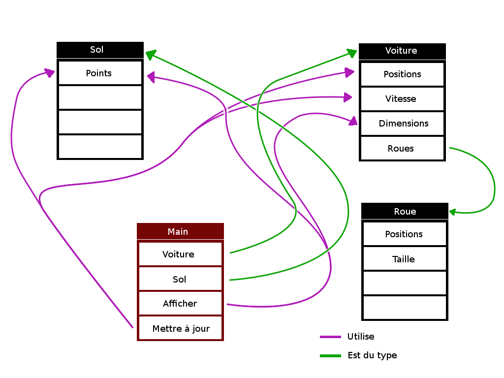

P's-DSr
- Cahier des charges
- Structures et données
- Réalisation
Cahier des charges
L'objectif de notre projet est de réaliser un jeu de course. Le joueur devra avancer sur un terrain généré "aléatoirement" en 2 dimensions.

Voici une liste de différentes fonctions à réaliser :
- Projet de base
- Génération d'une carte aléatoire
- Gestion de la physique (gravité, collisions…)
- Ajout d'objectifs (distance parcourue) et de difficulté croissante (pentes, creux…)
- Création de graphismes
- Fonctionalités facultative
- Ajout du multijoueur
- Création d'un intelligence artificielle (par réseaux de neurones) permettant de donner un objectif supplémentaire
Répartition des taches :
| Semaine |
1 |
2 |
3 |
4 |
5 |
6 |
7 |
8 |
9 |
| Dossier et diaporama |
|
|
|
| Controle du joueur |
|
| Gestion de la carte |
|
| Gestion de la physique |
|
| Graphismes |
| Objectifs |
| Création d'objectifs |
| Multijoueur |
| Intelligence artificielle |
Structures et types de données
Afin de réaliser notre projet nous avons choisis d'utiliser une modèle orienté objet (avec des classes) afin de séparer clairement les fonctions de notre application. Voici les classes principales et leur utilité :
- Sol : C'est la classe qui va gérer le sol (son affichage, ses points, sa génération).
- Voiture : Cette classe contient le contrôle du joueur, une partie de la gestion physique (gravité, collisions avec le sol) ainsi que l'affichage du personnage.
- Roue : La fonctions principale de cette classe (affichage mis à part) est de gérer les collisions entre les roues et le sol (chaque roue son objet, ses positions liées à la voiture).
Ces classes ne peuvent fonctinner sans qu'on le demande, c'est pourquoi le fichier principal (main.js) s'occupe de faire le lien entre tous les objets (processing, les roues, le sol...).

La classe du sol
Cette classe, comme son nom l'indique, gère les fonctions relatives au sol (affichage, génération...). Voici les variables internes que celle-ci utilise :
- points, tableau de flottants : contient tous les points du sol généré actuellement, ceux ci sont composés de valeur entre 0 et 1
- pointsDistance, entier : contient la distance horizontale entre chaque point
Ces variables sont utilisées dans les fonctions suivantes :
- generate : génère un certain nombre de flottants à l'aide du bruit de Perlin, ceux-ci sont stockés dans la variable points
- draw : affiche le sol en dessinant des segments entre tous les points affichables (qui ne sortent pas de l'écran), chaque point est calculé de la facon suivante :
- en x : l'index du point dans le tableau points est multiplié par la variable pointsDistance
- en y : la valeur du point (entre 0 et 1) est multiplié par 70% de la hauteur totale de la fenêtre, cela permet d'avoir au minimum 30% d'espace libre